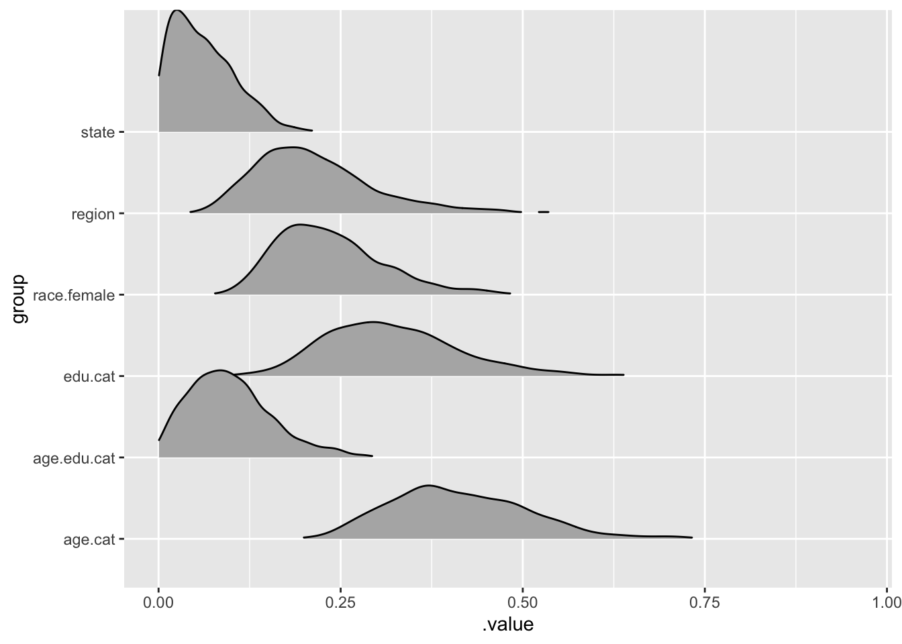

This blogpost is a reproduction of this. Multi-level regression with post-stratification (MRP) is one of the more powerful predictive strategies for opinion polling and election forecasting. It combines the power of multi-level modeling which anticipate and predict group and population level effects which have good small N predictive properties with post-stratification which helps to temper the predictions to the demographics or other variables of interest. This method has been put out by Andrew Gelman et al and there is a good deal of literature on the subject.
This blog post then seeks to reproduce an example made by Tim Mastny using the brms package and tidyverse tooling.
── Conflicts ────────────────────────────────────────── tidyverse_conflicts() ──
x dplyr::filter() masks stats::filter()
x dplyr::lag() masks stats::lag()
library(lme4)
Loading required package: Matrix
Attaching package: 'Matrix'
The following objects are masked from 'package:tidyr':
expand, pack, unpack
library(brms)
Loading required package: Rcpp
Loading 'brms' package (version 2.16.1). Useful instructions
can be found by typing help('brms'). A more detailed introduction
to the package is available through vignette('brms_overview').
Attaching package: 'brms'
The following object is masked from 'package:lme4':
ngrps
The following object is masked from 'package:stats':
ar
library(rstan)
Loading required package: StanHeaders
rstan version 2.26.3 (Stan version 2.26.1)
For execution on a local, multicore CPU with excess RAM we recommend calling
options(mc.cores = parallel::detectCores()).
To avoid recompilation of unchanged Stan programs, we recommend calling
rstan_options(auto_write = TRUE)
For within-chain threading using `reduce_sum()` or `map_rect()` Stan functions,
change `threads_per_chain` option:
rstan_options(threads_per_chain = 1)
Attaching package: 'rstan'
The following object is masked from 'package:tidyr':
extract
Installing packages into '/usr/local/lib/R/4.1/site-library'
(as 'lib' is unspecified)
Warning in i.p(...): installation of package 'Rcpp' had non-zero exit status
Warning in i.p(...): installation of package 'wk' had non-zero exit status
Warning in i.p(...): installation of package 'e1071' had non-zero exit status
Warning in i.p(...): installation of package 'sp' had non-zero exit status
Warning in i.p(...): installation of package 'magrittr' had non-zero exit status
Warning in i.p(...): installation of package 's2' had non-zero exit status
Warning in i.p(...): installation of package 'maptools' had non-zero exit status
Warning in i.p(...): installation of package 'rgdal' had non-zero exit status
Warning in i.p(...): installation of package 'rgeos' had non-zero exit status
Warning in i.p(...): installation of package 'sf' had non-zero exit status
* checking for file ‘/private/var/folders/0x/6bnjy4n15kz8nbfbbwbyk3pr0000gn/T/Rtmp6Nlkt5/remotes2f4974e2165b/hrbrmstr-albersusa-07aa87f/DESCRIPTION’ ... OK
* preparing ‘albersusa’:
* checking DESCRIPTION meta-information ... OK
* checking for LF line-endings in source and make files and shell scripts
* checking for empty or unneeded directories
* building ‘albersusa_0.4.1.tar.gz’
Installing package into '/usr/local/lib/R/4.1/site-library'
(as 'lib' is unspecified)
library(albersusa)
Warning in fun(libname, pkgname): rgeos: versions of GEOS runtime 3.10.1-CAPI-1.16.0
and GEOS at installation 3.9.1-CAPI-1.14.2differ
Now the fully Bayesian model can be built with the associated group level effects specified.
bayes.mod <-brm(yes.of.all ~ (1| race.female) + (1| age.cat) + (1| edu.cat)+ (1| age.edu.cat) + (1| state) + (1| region)+ p.relig + kerry.04,data = marriage.data, family =bernoulli(),prior =c(set_prior("normal(0,0.2)", class ="b"),set_prior("normal(0,0.2)", class ="sd", group ="race.female"),set_prior("normal(0,0.2)", class ="sd", group ="age.cat"),set_prior("normal(0,0.2)", class ="sd", group ="edu.cat"),set_prior("normal(0,0.2)", class ="sd", group ="age.edu.cat"),set_prior("normal(0,0.2)", class ="sd", group ="state"),set_prior("normal(0,0.2)", class ="sd", group ="region")), iter =1000, chains =2, cores =2, silent =TRUE)
Running /usr/local/Cellar/r/4.1.2/lib/R/bin/R CMD SHLIB foo.c
/usr/local/opt/llvm/bin/clang -I"/usr/local/Cellar/r/4.1.2/lib/R/include" -DNDEBUG -I"/usr/local/lib/R/4.1/site-library/Rcpp/include/" -I"/usr/local/lib/R/4.1/site-library/RcppEigen/include/" -I"/usr/local/lib/R/4.1/site-library/RcppEigen/include/unsupported" -I"/usr/local/lib/R/4.1/site-library/BH/include" -I"/usr/local/lib/R/4.1/site-library/StanHeaders/include/src/" -I"/usr/local/lib/R/4.1/site-library/StanHeaders/include/" -I"/usr/local/lib/R/4.1/site-library/RcppParallel/include/" -I"/usr/local/lib/R/4.1/site-library/rstan/include" -DEIGEN_NO_DEBUG -DBOOST_DISABLE_ASSERTS -DBOOST_PENDING_INTEGER_LOG2_HPP -DSTAN_THREADS -DUSE_STANC3 -DSTRICT_R_HEADERS -DBOOST_PHOENIX_NO_VARIADIC_EXPRESSION -DBOOST_NO_AUTO_PTR -include '/usr/local/lib/R/4.1/site-library/StanHeaders/include/stan/math/prim/fun/Eigen.hpp' -D_REENTRANT -DRCPP_PARALLEL_USE_TBB=1 -I/usr/local/opt/gettext/include -I/usr/local/opt/readline/include -I/usr/local/opt/xz/include -I/usr/local/include -fPIC -g -O3 -Wall -pedantic -std=gnu99 -mtune=native -pipe -c foo.c -o foo.o
In file included from <built-in>:1:
In file included from /usr/local/lib/R/4.1/site-library/StanHeaders/include/stan/math/prim/fun/Eigen.hpp:22:
In file included from /usr/local/lib/R/4.1/site-library/RcppEigen/include/Eigen/Dense:1:
In file included from /usr/local/lib/R/4.1/site-library/RcppEigen/include/Eigen/Core:88:
/usr/local/lib/R/4.1/site-library/RcppEigen/include/Eigen/src/Core/util/Macros.h:628:1: error: unknown type name 'namespace'
namespace Eigen {
^
/usr/local/lib/R/4.1/site-library/RcppEigen/include/Eigen/src/Core/util/Macros.h:628:16: error: expected ';' after top level declarator
namespace Eigen {
^
;
In file included from <built-in>:1:
In file included from /usr/local/lib/R/4.1/site-library/StanHeaders/include/stan/math/prim/fun/Eigen.hpp:22:
In file included from /usr/local/lib/R/4.1/site-library/RcppEigen/include/Eigen/Dense:1:
/usr/local/lib/R/4.1/site-library/RcppEigen/include/Eigen/Core:96:10: fatal error: 'complex' file not found
#include <complex>
^~~~~~~~~
3 errors generated.
make: *** [foo.o] Error 1
Examine the model output. If this were for a paper or a real prediction it would be important to run the model through a few more iterations with further diagnostic plots to ensure convergence.
summary(bayes.mod)
Warning in seq.default(from = 1, len = along - 1): partial argument match of
'len' to 'length.out'
Warning in seq.default(to = N - 1, len = N - along): partial argument match of
'len' to 'length.out'
Warning in seq.default(len = N): partial argument match of 'len' to 'length.out'
Warning in seq.default(along = arg.names): partial argument match of 'along' to
'along.with'
Warning in seq.default(len = length(arg.list)): partial argument match of 'len'
to 'length.out'
Warning in seq.default(along = perm): partial argument match of 'along' to
'along.with'
Warning in seq.default(along = perm): partial argument match of 'along' to
'along.with'
Warning in seq.default(along = perm): partial argument match of 'along' to
'along.with'
Warning in seq.default(along = perm): partial argument match of 'along' to
'along.with'
Warning in seq.default(len = ncol(arg.dim)): partial argument match of 'len' to
'length.out'
Warning in seq.default(len = N): partial argument match of 'len' to 'length.out'
Warning in seq.default(along = arg.names): partial argument match of 'along' to
'along.with'
Warning in seq.default(along = arg.names): partial argument match of 'along' to
'along.with'
Warning in seq.default(len = length(arg.names)): partial argument match of 'len'
to 'length.out'
Warning in seq.default(along = perm): partial argument match of 'along' to
'along.with'
Family: bernoulli
Links: mu = logit
Formula: yes.of.all ~ (1 | race.female) + (1 | age.cat) + (1 | edu.cat) + (1 | age.edu.cat) + (1 | state) + (1 | region) + p.relig + kerry.04
Data: marriage.data (Number of observations: 6341)
Draws: 2 chains, each with iter = 1000; warmup = 500; thin = 1;
total post-warmup draws = 1000
Group-Level Effects:
~age.cat (Number of levels: 4)
Estimate Est.Error l-95% CI u-95% CI Rhat Bulk_ESS Tail_ESS
sd(Intercept) 0.41 0.10 0.26 0.63 1.00 843 569
~age.edu.cat (Number of levels: 16)
Estimate Est.Error l-95% CI u-95% CI Rhat Bulk_ESS Tail_ESS
sd(Intercept) 0.10 0.06 0.01 0.24 1.00 486 517
~edu.cat (Number of levels: 4)
Estimate Est.Error l-95% CI u-95% CI Rhat Bulk_ESS Tail_ESS
sd(Intercept) 0.32 0.09 0.17 0.54 1.00 1054 818
~race.female (Number of levels: 6)
Estimate Est.Error l-95% CI u-95% CI Rhat Bulk_ESS Tail_ESS
sd(Intercept) 0.24 0.07 0.12 0.42 1.00 623 821
~region (Number of levels: 5)
Estimate Est.Error l-95% CI u-95% CI Rhat Bulk_ESS Tail_ESS
sd(Intercept) 0.22 0.09 0.09 0.43 1.00 633 643
~state (Number of levels: 49)
Estimate Est.Error l-95% CI u-95% CI Rhat Bulk_ESS Tail_ESS
sd(Intercept) 0.06 0.04 0.00 0.16 1.00 425 541
Population-Level Effects:
Estimate Est.Error l-95% CI u-95% CI Rhat Bulk_ESS Tail_ESS
Intercept -1.49 0.49 -2.48 -0.50 1.00 729 636
p.relig -0.01 0.00 -0.02 -0.00 1.00 1377 920
kerry.04 0.02 0.01 0.01 0.03 1.01 1271 784
Draws were sampled using sampling(NUTS). For each parameter, Bulk_ESS
and Tail_ESS are effective sample size measures, and Rhat is the potential
scale reduction factor on split chains (at convergence, Rhat = 1).
Do some visualisations
library(tidybayes)
Attaching package: 'tidybayes'
The following objects are masked from 'package:brms':
dstudent_t, pstudent_t, qstudent_t, rstudent_t
bayes.mod %>%gather_draws(`sd_.*`, regex=TRUE) %>%ungroup() %>%mutate(group = stringr::str_replace_all(.variable, c("sd_"="","__Intercept"=""))) %>%ggplot(aes(y=group, x = .value)) + ggridges::geom_density_ridges(aes(height=..density..),rel_min_height =0.01, stat ="density",scale=1.5)
Warning: as.mcmc.brmsfit is deprecated and will eventually be removed.

Now Bring them Together
The next step then is to combine the predictions from the Bayesian HLM with the postratified values. This can then be used to estimate support.
Now we can add some additional quantification of uncertainity by adding multiple draws from the posterior distribution.
pred<-bayes.mod %>%add_predicted_draws(newdata=Census, allow_new_levels=TRUE, n =10) %>%rename(support = .prediction) %>%mutate(support = support * cpercent.state)%>%group_by(state, add =TRUE) %>%mean_qi()
Warning:
In add_predicted_draws(): The `n` argument is a deprecated alias for `ndraws`.
Use the `ndraws` argument instead.
See help("tidybayes-deprecated").
Warning: Argument 'nsamples' is deprecated. Please use argument 'ndraws'
instead.
Warning: The `add` argument of `group_by()` is deprecated as of dplyr 1.0.0.
Please use the `.add` argument instead.
This warning is displayed once every 8 hours.
Call `lifecycle::last_lifecycle_warnings()` to see where this warning was generated.
![]()